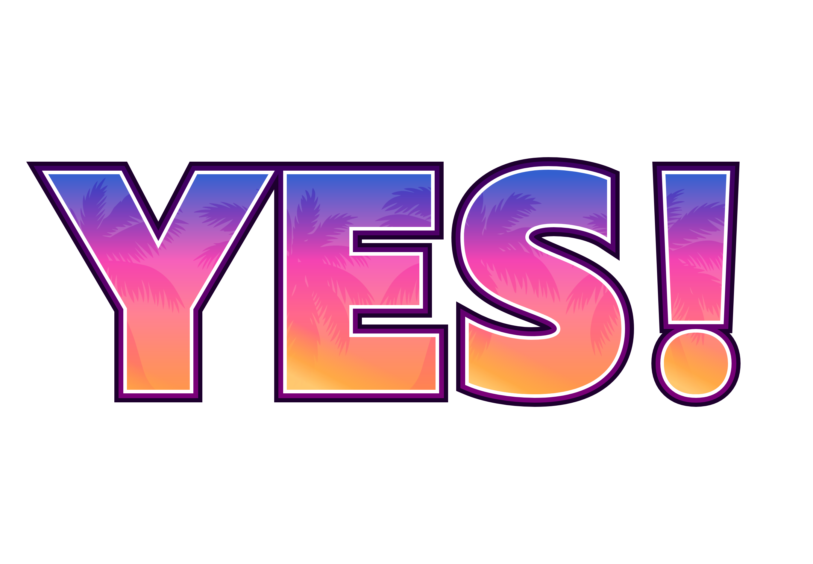

OFFICIAL PC PORT HAS BEEN RELEASED BY TAKE-TWO AND ROCKSTAR GAMES. DOWNLOAD ONLY FROM OFFICIAL PLATFORMS AND VERIFIED LAUNCHERS.

Released. Official PC port is now live and playable worldwide.
Projects retired. Official PC release superseded all community ports.